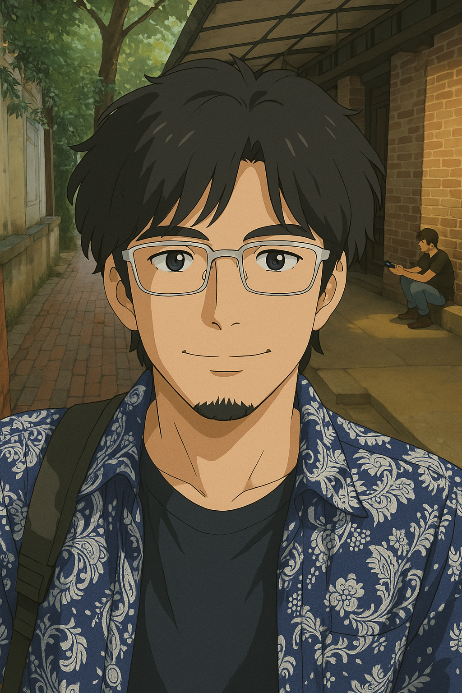

AI生成コンテンツを日々「見抜く側」として評価を重ねてきた経験を土台に、これからはAIと共に 「作る側」へとキャリアをシフトしていきます。Claude Codeをはじめとするエージェント型AIを 毎日使い込む中で、評価者としての厳密な目と、Vibeコーディングによる高速なプロトタイピング力を 掛け合わせることに大きな可能性を感じています。
AI評価の現場で培った「ブレない基準」「逃げない判断」を、これからはコードを書き、プロダクトを 形にする力として活かしていきたいと考えています。
マレーシア・クアラルンプール在住。現地に拠点を置きながら、大手グローバル動画プラットフォームにて Googleの厳格なポリシーガイドラインに基づきAI生成動画の評価を行っています。1日76件・精度95%を 維持しながら、日本語コンテンツのニュアンスを丁寧に見極める仕事に、日々誠実に向き合っています。
東芝でのテクニカルサポート、Meta広告のカスタマーサポート、そして日本・中国・マレーシアでの Webディレクション/プロジェクトマネジメント経験を土台に、AI Evaluatorという役割へキャリアを シフトさせてきました。マレーシア移住後も現地企業で実務経験を積み重ね、多拠点での就業経験を 活かした異文化コミュニケーション力を強みにしています。Claude Opus・Claude Codeを毎日活用する ユーザーとして、AI駆動の未来への強い関心と、AIの安全性に対する妥協のない意識を持っています。
ブレない基準で、逃げずに判断する。それが、私がAI評価の仕事で大切にしてきた姿勢であり、 これから「作る側」として歩む上でも土台になると考えています。
Claude・ChatGPT・Geminiなど複数のLLMを日常的に使い比べ、マルチターンでのプロンプト設計や 出力比較・検証を行うこと自体が趣味に。コンテンツモデレーターやAI Video Evaluatorとしての 実務経験が、日々のAI検証にも活きています。
日本・中国・マレーシアでの居住・就業経験を通じ、異なる文化背景を持つチームと働く面白さに 魅了されてきました。異文化間の橋渡し役として、丁寧なコミュニケーションを大切にしています。
Toho University（日本）
理学部 生物学科 卒業
Internet Academy（日本）
Web Design & Direction コース 修了